Facilidades
1. JURO SIMPLES
1.1 Explicação
O que é Juro Simples?
O juro simples é calculado tendo como base o valor inicial, conhecido como
capital,
a taxa de juro e o tempo. A fórmula do juro simples é J = C ∙ i ∙ t, em que J é o juro, C é o capital, i
é a taxa de juro e t é o tempo.
Para calcular o juro simples, basta substituir os valores na fórmula e realizar o cálculo. Além do juro simples,
existe também o juro composto,
que possui um acréscimo maior ao decorrer do tempo, mas o foco será em juro simples. O juro simples é um tipo de
juro corriqueiro no nosso cotidiano.
Quando atrasamos o pagamento de uma conta, por exemplo, é bastante comum a cobrança de juro e multa, e essa
cobrança é feita em cima do valor da dívida, ou seja,
quanto maior o seu valor, maior será o juro. Sendo assim, o juro é um valor acrescentado a um capital ao longo
do tempo.
Observação: Vale ressaltar que os problemas envolvendo juro simples nem sempre pedem para calcular
apenas o juro. Eles podem pedir o tempo, a taxa de juro ou até mesmo o capital.
Observe a tabela abaixo, demonstrando um pouco das conversões das 4 bases:
1.2 Alguns exercícios
feitos em sala de aula/tema:
| Exemplo 1. |
Exemplo 2. |
Exemplo 3. |
| 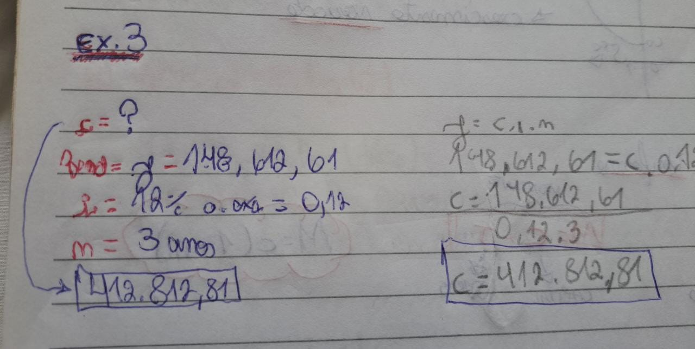
| 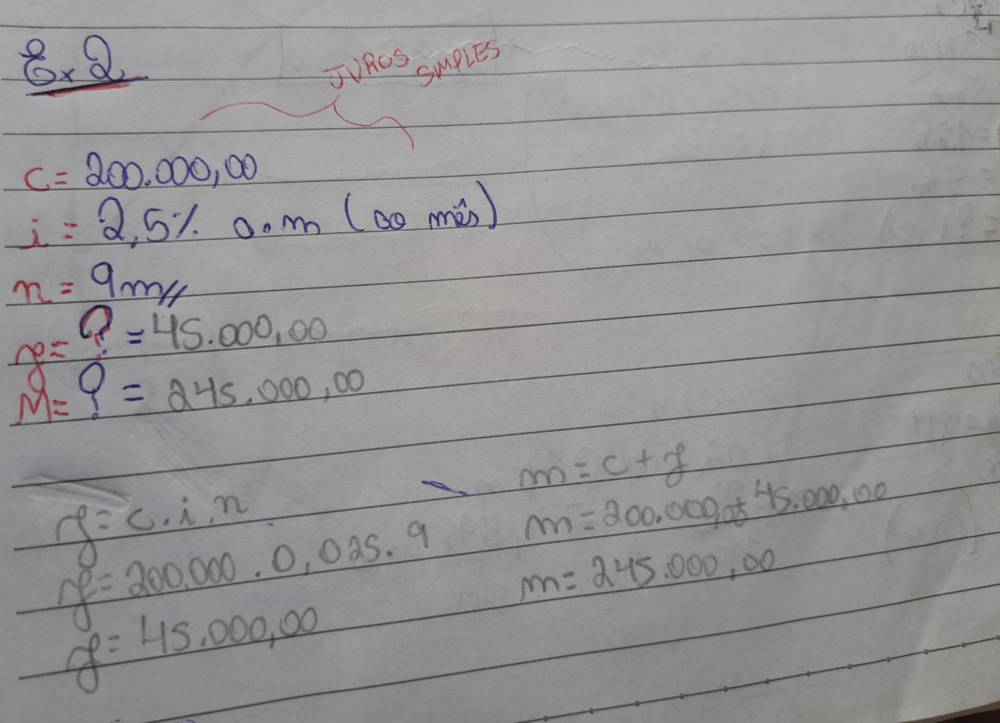
| 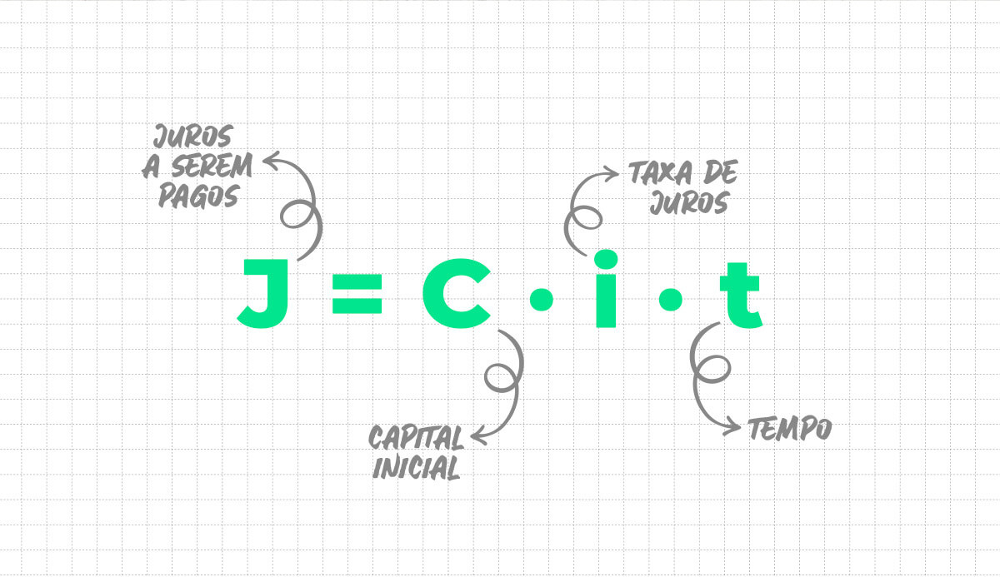
|
2. JURO COMPOSTO
1.1 Explicação
O que é Juro Composto?
Os juros compostos são recorrentes nas relações comerciais, nas compras
parceladas
a longo prazo, nos investimentos, nos empréstimos e até mesmo no simples atraso do pagamento de contas. O juros
pode ser um aliado ou um vilão.
É importante dominar os fatores que influenciam o seu cálculo, que são o capital, a taxa de juros, o tempo e o
montante.
Ao comparar o juros composto com o juros simples, precisamos entender que o primeiro é calculado sempre sobre o
valor do
exercício anterior, já o segundo é calculado sempre em cima do valor inicial. O juros composto terá maior
crescimento com o
passar do tempo, em comparação com o juros simples.
A formula do Juro Composto é:
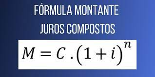]
1.2 Alguns exercícios
feitos em sala de aula/tema:
| Exemplo 1. |
Exemplo 2. |
Exemplo 3. |
| 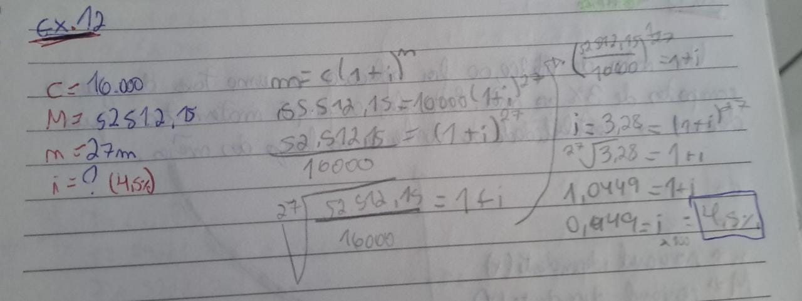
| 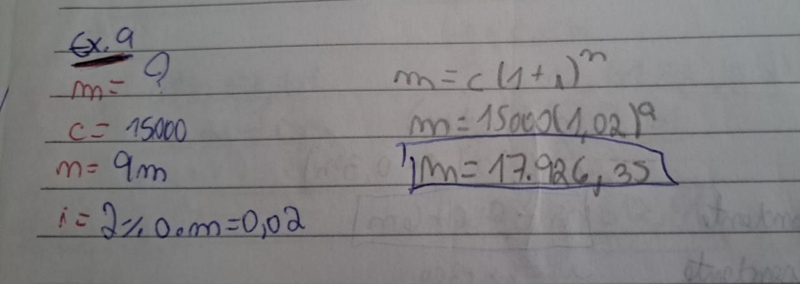
| 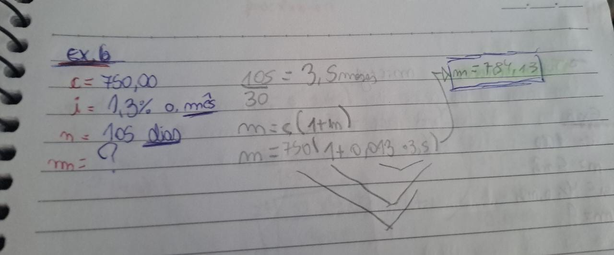
|
Dificuldades
1. FUNÇÕES LOGARÍTMICAS
1.1 Explicação
O que é uma Função logarítmicas?
Conhecemos como função logarítmica a função com lei de formação f(x) = logax, cujo domínio são os números reais
positivos e o contradomínio são os
números reais. A base, por definição, deve ser positiva e diferente de 1.
A função logarítmica é útil para situações como os juros compostos — já que ela é a função inversa da função
exponencial — e a medição de magnitude de terremotos,
há também sua aplicação na química e na geografia. A função logarítmica pode ser crescente ou decrescente, ela é
decrescente quando a sua base é um número maior que 0 e menor que 1, e crescente quando a sua base é maior do
que 1.
Definimos a função logarítmica como f: R* + → R, ou seja, seu domínio é o conjunto dos números reais não nulos e
seu contradomínio
são os números reais, tal que a lei de formação pode ser descrita por f(x) = logax,, em que x é a variável e a é
a base do logaritmo.
Lembrando que, por definição, em um logaritmo a base é positiva e diferente de 1.
Confira abaixo alguns exemplos:
a) f(x) = log x → (Quando a base não aparece no logaritmo, seu valor é 10.)
b) f(x) = log0,5 x → (Nesse caso a base é 0,5.)
c) f(x) = log8x → (Nesse caso a base é 8.)
Confira abaixo alguns exemplos de questões feitas em aula:
| Exemplo 1. |
Exemplo 2. |
Exemplo 3. |
| 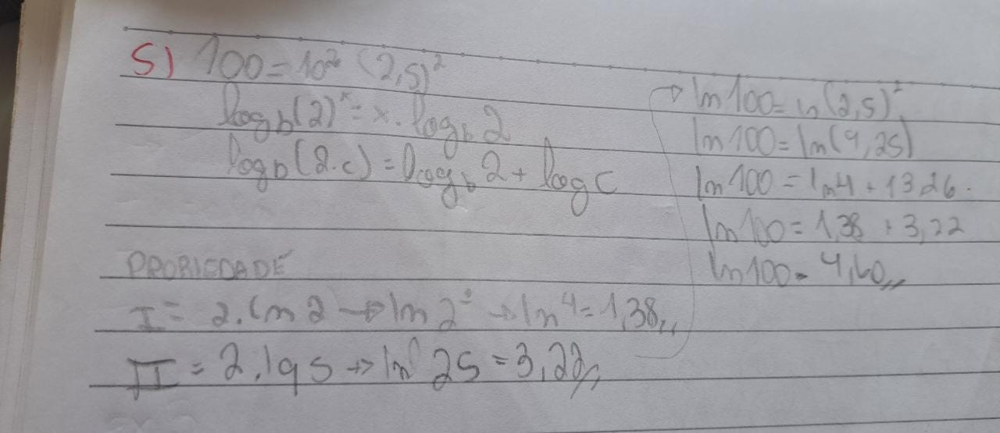
| 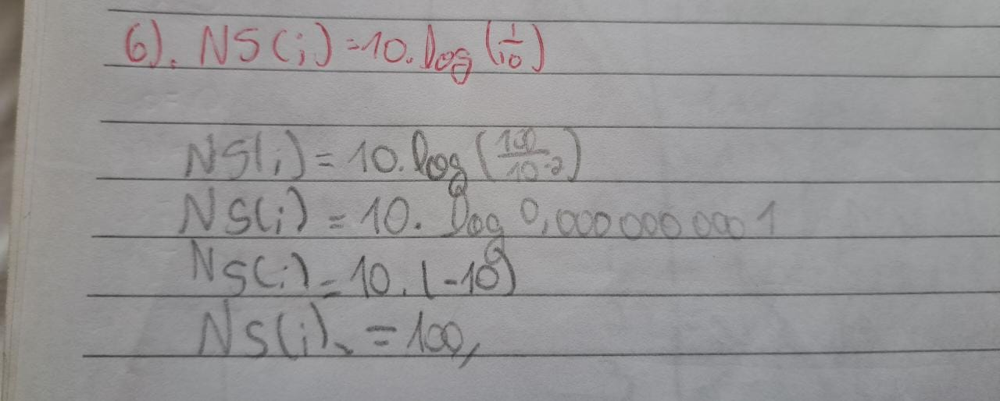
| 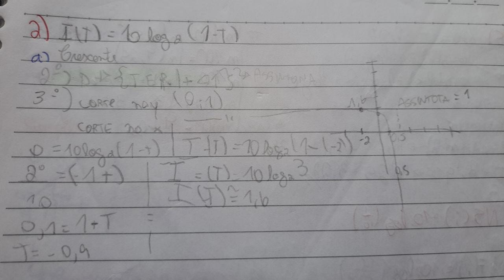
|
Propriedades Operatorias:
2. GRÁFICO DA FUNÇÃO LOGARÍTMICAS
2.1 Gráfico
Sobre o Gráfico:
Para construir o gráfico de uma função logarítmica, é necessário atribuir alguns valores para x e encontrar
o valor de f(x) nesses casos. Existem duas possibilidades para esse gráfico, que pode ser crescente ou decrescente.
O que define seu comportamento é o valor da base a.
Confira abaixo alguns exemplos:
| Exemplo 1. |
Exemplo 2. |
Exemplo 3. |
| 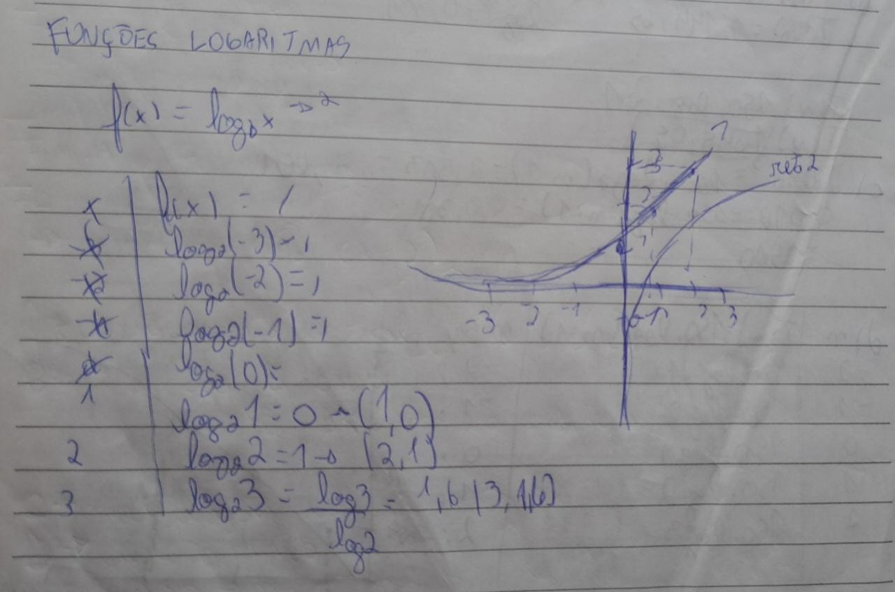
| 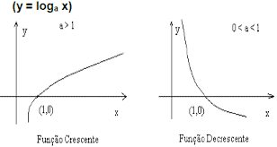
| 
|
HOME